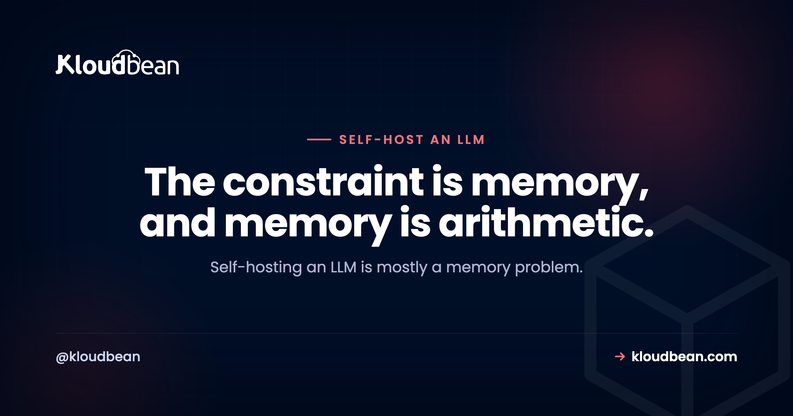

Self-Host an LLM: The GPU Memory Math, Quantization, and Serving It

Self-hosting an LLM is mostly a memory problem wearing a trench coat. Once you can predict how much GPU memory a model needs, and how to shrink it to fit, everything downstream gets easier: which machine, which serving engine, how fast it'll run, and whether it's even worth doing over a hosted API. So this is a field guide to the parts that actually decide the outcome, not a click-here tour. The math and the tradeoffs here apply wherever the model runs, your laptop, a rented GPU box, or a managed host.
A model's GPU memory need is roughly its weights (parameter count times bytes per parameter) plus a KV cache that grows with context length and how many requests run at once. A 7B model is about 14GB in 16-bit and about 4GB once you quantize it to 4-bit, which is usually the difference between fitting a small card and not loading at all. Use Ollama for a simple single-user setup, vLLM when you need real concurrency. Self-host for privacy, data residency, or steady high volume. At low volume, a hosted API is cheaper and simpler.
Self-hosting an LLM is a memory problem
The first question isn't "which GPU," it's "how much memory does this model need," because that answer picks the GPU for you. Three things share a card's memory (its VRAM), and only the first is obvious.
The weights are the floor. A model's parameters have to sit in memory to run, and the size is just multiplication: parameter count times bytes per parameter. At 16-bit precision, each parameter takes 2 bytes, so a 7-billion-parameter model needs about 14GB before it has done a single useful thing. That one line explains most "why won't it load" confusion.
| Model | 16-bit (2 bytes/param) | 8-bit (1 byte) | 4-bit (~0.5 byte) |
|---|---|---|---|
| 7B | ~14 GB | ~7 GB | ~4 GB |
| 13B | ~26 GB | ~13 GB | ~7 GB |
| 70B | ~140 GB | ~70 GB | ~40 GB |
These are the weights alone, rounded, and real usage runs a bit higher because of overhead. But the shape is the point: a 70B model is not fitting on one ordinary card at 16-bit, and that is a fact about arithmetic, not about your setup.
The KV cache is the part people forget. As the model generates, it keeps a running cache of every token's keys and values so it doesn't recompute them. That cache grows with two things: how long your prompts and replies are (context length), and how many requests you serve at once (concurrency). A single short chat barely registers. A long-context assistant serving twenty people at once can need as much memory for the cache as for a small model's weights. So size for weights plus cache plus a little headroom, never just the model name.
Quantization: how to make a model fit
Quantization is just storing each weight in fewer bits. Full precision for inference is usually 16-bit, at 2 bytes a weight. Drop to 8-bit and each weight is 1 byte, so the model roughly halves. Drop to 4-bit and it roughly halves again. That is the whole trick behind running a model that looked far too big.
You'll meet a few formats. GGUF is the one Ollama and llama.cpp use, and it's the friendliest for mixed CPU and GPU. GPTQ and AWQ are GPU-focused formats you'll see with vLLM and similar servers. They get to a similar place by different roads.
What do you trade? Some accuracy, and less than people fear. Eight-bit is close to indistinguishable from full precision for most work. Four-bit is the sweet spot most self-hosters land on: a small, honest quality dip that you won't notice on summarizing, drafting, classification, or answering over your own docs. Go below 4-bit and the loss starts to show. Here's the counterintuitive part worth internalizing: a larger model quantized to 4-bit usually beats a smaller model at full precision that takes the same memory. When in doubt, run the biggest model that fits at 4-bit.
Ollama vs vLLM: different tools, different jobs
People treat this like a versus. It isn't. They're built for different situations, and picking the wrong one is a common way to have a bad time.
Ollama wraps llama.cpp. It pulls GGUF models with one command, and its trick is that it can offload some layers to CPU memory when the GPU is tight, so a model that doesn't quite fit still runs, just slower. That makes it forgiving and perfect for a single user, a developer machine, or a small internal tool. It is the easiest way to get a model answering.
vLLM is a serving engine built for throughput. Its PagedAttention manages that KV cache efficiently, and continuous batching lets it interleave many requests so the GPU stays busy instead of handling one chat at a time. That is what you want behind a real app with concurrent users. The cost is that it's heavier to run and it wants the whole model in GPU memory, no gentle CPU offload to save you.
| Ollama | vLLM | |
|---|---|---|
| Built for | Single user, dev, small internal use | Concurrent requests behind an app |
| Models | GGUF, one-command pulls | Hugging Face models, GPTQ/AWQ |
| If it doesn't fit | Offloads layers to CPU, runs slower | Wants the whole model in VRAM |
| Concurrency | Basic | Continuous batching, high throughput |
| Effort to run | Low | Higher |
The good news: both expose an OpenAI-compatible API, so your application code barely changes between them, or away from a hosted API. You point your client at a different base URL and carry on.
Serving the model to your app
Running the model is half of it. Your app has to reach it, and the clean shape is the same one you already use for a hosted API: the model listens on an endpoint, and your backend calls it. The browser never talks to the model directly, so authentication, rate limits, and a spend cap all live in one place you control.
# Your backend calls the model on your own server, OpenAI-compatible
curl http://127.0.0.1:8000/v1/chat/completions \
-H "Content-Type: application/json" \
-d '{
"model": "your-open-model",
"messages": [{"role": "user", "content": "Summarize this ticket."}],
"stream": true
}'In the app itself, this is usually one environment variable pointing at your own URL instead of the vendor's:
# .env (never commit this)
LLM_BASE_URL=http://127.0.0.1:8000/v1
LLM_MODEL=your-open-modelTwo things are worth getting right on day one. Stream the tokens back so a long answer doesn't look frozen, which the guide to streaming LLM responses in production covers, including the proxy buffering trap that silently breaks streaming. And put a limit in front of the endpoint so one client can't run your GPU into the ground, which is the job of rate limiting and cost control. If you gate the endpoint with a key, keep it server-side, the same discipline as not exposing API keys.
Why it's slow, and why it fails
Two surprises catch first-timers, and both have clean explanations.
Generation speed is bound by memory bandwidth, not raw compute. To produce each token, the GPU reads the model's weights out of memory. So the speed you feel, tokens per second, is mostly about how fast the card can stream those weights, and a smaller or more heavily quantized model is faster simply because there's less to read each step. This is why quantization buys speed as well as space, and why "bigger card" often means "faster," not just "fits."
Out-of-memory is the classic failure, and it's predictable. If weights plus KV cache exceed VRAM, you get a CUDA out-of-memory error, or, with Ollama, a crawl as it spills to the CPU. The fixes are all in this article already: quantize harder, shorten the maximum context, serve fewer requests at once, or move to a card with more memory. The trap that catches everyone once is trying to run a 70B model on a 24GB card. At 16-bit it needs about 140GB, at 4-bit still about 40GB, so it simply won't fit one such card. Run a smaller model, quantize more aggressively, or split across multiple GPUs.
The cost question, done honestly
The real question behind "should I self-host" is usually money, so here's how to answer it for your own numbers instead of trusting anyone's headline.
A GPU server is a flat cost. You pay for it by the hour or month whether it serves ten prompts or ten million. A hosted API is metered: you pay per token, input and output priced separately, so the bill scales with use. Those are two different shapes, and they cross somewhere.
To find your crossover, estimate your monthly tokens, multiply by the API's per-token price to get the API's monthly cost, and compare that to what a GPU box capable of your model would cost for the month. Below the crossover the API wins on price and on hassle. Above it, the flat box wins, and the gap widens fast for heavy, steady jobs like classifying or summarizing at scale. I won't hand you a specific crossover number, because it moves with your model, your traffic, and current GPU prices, and a made-up figure would just mislead you.
One honest opinion to save you a detour: don't self-host to save money at low volume. Between the idle GPU and your own time, it usually costs more than a light API bill. Privacy and data residency can justify a self-hosted model on their own. Pure penny-pinching at a few calls a day cannot.
So should you self-host at all?
Strip away the hype and three reasons hold up. Privacy and residency: when the model runs on your own machine, the prompt goes there and stops, so nothing sensitive leaves your network or your region. That's the strongest reason and it isn't about money. Control: you pick the model, pin the version, and nobody deprecates or reprices it on you. Cost at real, steady volume: covered above.
Against that, be clear-eyed on quality. Open models have gotten genuinely good, good enough for the large majority of real work, but the very best hosted models still lead on the hardest reasoning. Plenty of teams run an open model for the bulk of the traffic and reach for a frontier API only for the rare hard case. If none of the three reasons above is true for you, a hosted API is the simpler call, and that's not a failure, it's just the right tool.
Where to run it
Three homes, in rough order of how much you manage. Your own workstation is perfect for learning and development. A rented GPU instance gives you full control and means you own the OS, the drivers, and the updates. A managed GPU host runs the box for you so you bring the model and skip the server maintenance. The Ollama and Open WebUI walkthrough is a good first build on any of them, and pgvector for AI apps plus the AI app reference architecture cover the rest of the stack once the model is answering.
Kloudbean is one managed option in that last bucket: it runs GPU servers across several clouds and regions, so you can keep the model and its data in a region you choose, and DeepSeek is a one-click install if you want the fastest possible start. Useful to know, but secondary to the point of this page, which is that the memory math and the serving choices above decide your setup wherever you run it.
Take it off localhost for good.
Move the whole thing onto a managed server you own: always-on processes, a managed database for real data, object storage for uploads, and Git deploys with live build logs.
- ✓ Managed databases
- ✓ Always-on processes
- ✓ Object storage
- ✓ Automatic backups
- ✓ Free SSL
- ✓ Git deploy
- ✓ Free migration
FAQ
How much GPU memory do I need to run a 7B, 13B, or 70B model?
Start from the weights: parameter count times bytes per parameter. At 16-bit that's about 14GB for a 7B model, 26GB for 13B, and 140GB for 70B. Quantized to 4-bit those drop to roughly 4GB, 7GB, and 40GB. Then add headroom for the KV cache, which grows with context length and concurrency, so plan for more than the weights alone.
Does quantization make a model worse?
A little, and usually less than people expect. Eight-bit is close to indistinguishable from full precision. Four-bit has a small quality dip that most tasks won't show, which is why it's the common choice. Below 4-bit the loss becomes noticeable. A useful rule: a bigger model at 4-bit usually beats a smaller model at full precision for the same memory.
What is the difference between Ollama and vLLM?
Ollama wraps llama.cpp, pulls GGUF models easily, and can offload layers to CPU when the GPU is tight, which makes it great for a single user or a dev machine. vLLM is a throughput engine with continuous batching, built to serve many concurrent requests behind an app, but it wants the whole model in GPU memory and is heavier to run. Use Ollama for simple, vLLM for concurrency.
Do I need a GPU, or can I run an LLM on CPU?
A small model will run on CPU, it just answers slowly because generation speed depends on memory bandwidth, and system RAM is far slower to stream than GPU memory. CPU is fine for trying things out or very light, patient use. For anything interactive or multi-user, a GPU is what makes it feel quick.
Why is my self-hosted LLM so slow?
Most often the model doesn't fully fit in GPU memory, so it's spilling to the CPU and streaming weights over a slower path. Generation speed is bound by memory bandwidth, so a model that doesn't fit crawls. Quantize it further, shorten the context, or use a card with more memory so the whole model sits in VRAM.
How does my app call a self-hosted model?
Both Ollama and vLLM expose an OpenAI-compatible API, so you point your existing client at your own base URL and keep most of your code. Have your backend call the model, not the browser, so you can add auth, rate limits, and a spend cap in one place. Stream the tokens back for long replies, and keep any gateway key on the server.
Is self-hosting an LLM cheaper than the OpenAI API?
Only at real, steady volume. A GPU server is a flat monthly cost while an API charges per token, so the two cross at some usage level. Estimate your monthly tokens times the API's price, compare it to a capable GPU box's monthly cost, and see which side of the crossover you're on. At low volume the API is cheaper and simpler.
Should I self-host or use a hosted API?
Self-host for privacy, data residency, control over the model, or genuinely heavy steady volume. Use a hosted API when you want the simplest path, the very best model quality, or you're at low volume where per-token pricing is cheap. Many teams do both: an open model for most traffic, a frontier API for the rare hard case.
Can I run a 70B model on a single GPU?
Not on an ordinary one. A 70B model needs about 140GB at 16-bit and roughly 40GB even at 4-bit, so it exceeds a typical single card. Your options are to quantize aggressively and use a large-memory card, split the model across multiple GPUs, or run a smaller model that fits the hardware you have.